B · Housekeeping storage
house_of_tomorrow/storage · 314×206 RGB · generated / approval pending

Exact4× nearest-neighbor1256×824

Six generated candidates awaiting owner visual review. Private branch agent/ch01-art-batch04-20261115, verified baseline 8607ed729c1af2258ae178e2fdf68ce7a6bc8d0a. Final pushed commit is reported in the owner handoff.
Story / route continuity · Unapplied state proposals · QA · Exact prompts / references · Assets / hashes · Delivery notes
house_of_tomorrow/arrival · 314×206 RGB · generated / approval pending
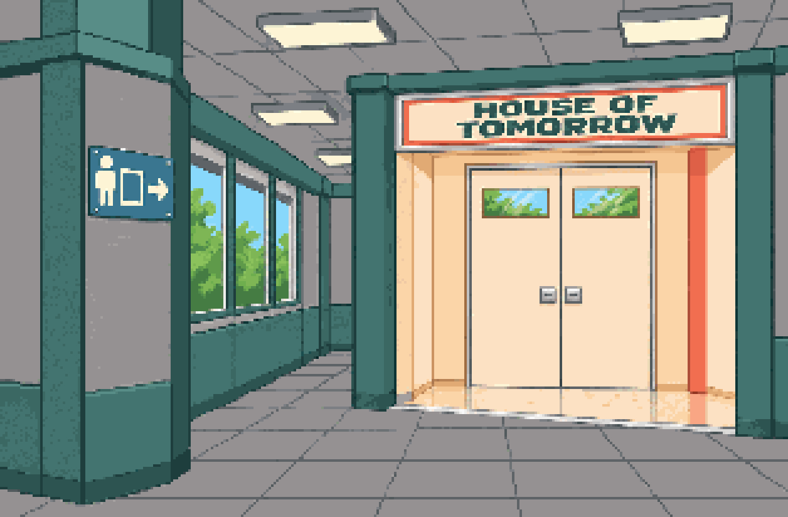
house_of_tomorrow/storage · 314×206 RGB · generated / approval pending
house_of_tomorrow/maintenance · 314×206 RGB · generated / approval pending

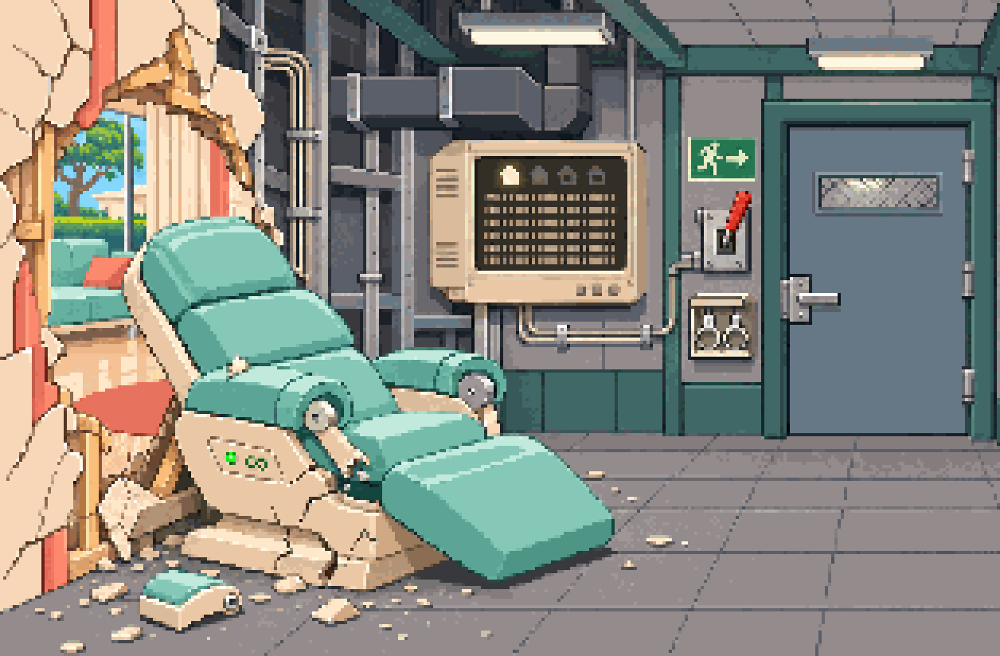
house_of_tomorrow/utility_exit · 314×206 RGB · generated / approval pending

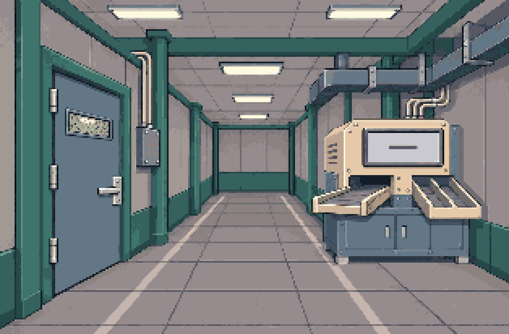
house_of_tomorrow/service_hatch · 314×206 RGB · generated / approval pending

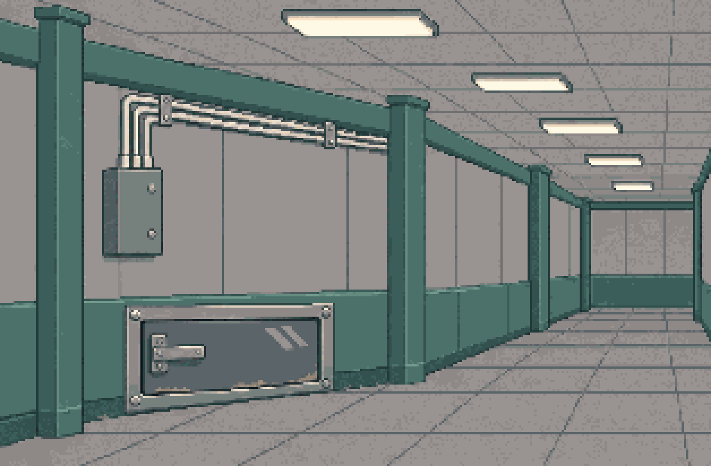
house_of_tomorrow/public_exit · 314×206 RGB · generated / approval pending


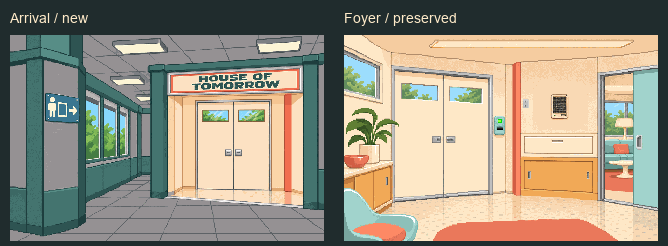
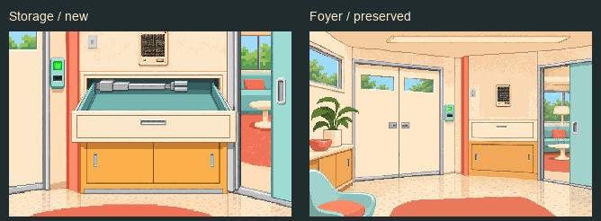
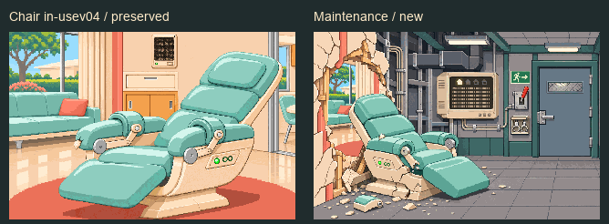
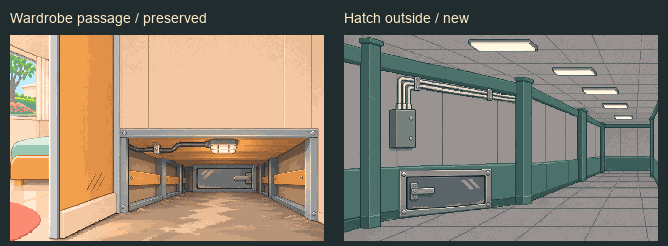
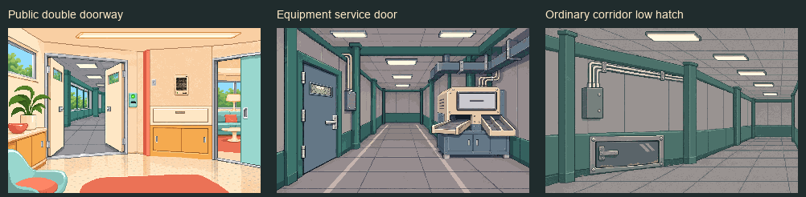
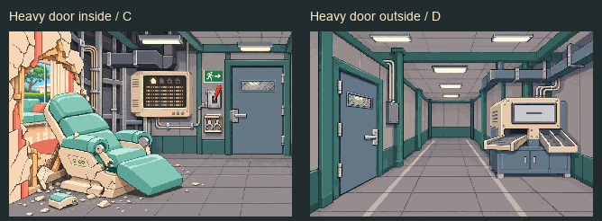
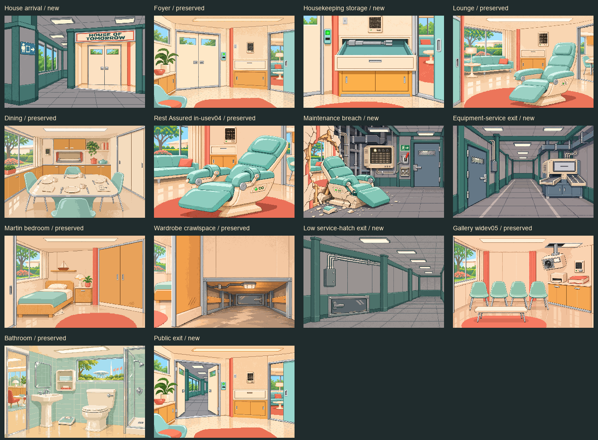
Eight preserved environments plus six new scenes. Latest gallery widev05 and accepted Rest Assured in-usev04 are the selected reference states. No earlier artwork, story/engine/registry paths, production assets, public site or Chapter2 content changed.